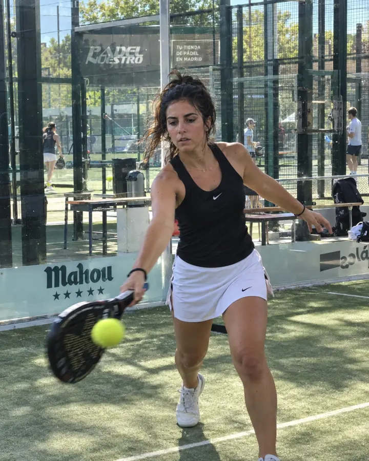
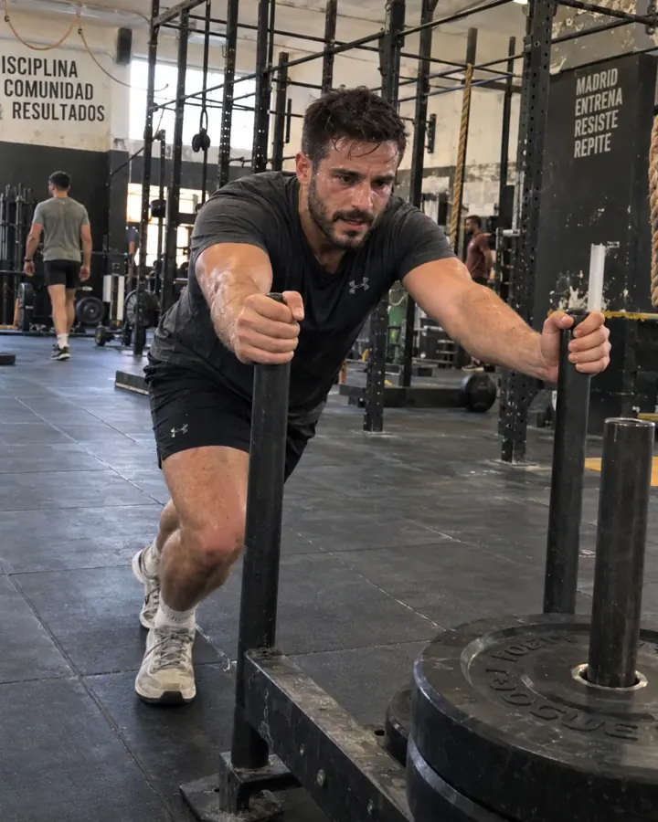
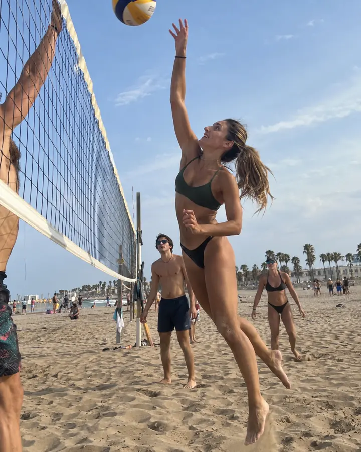
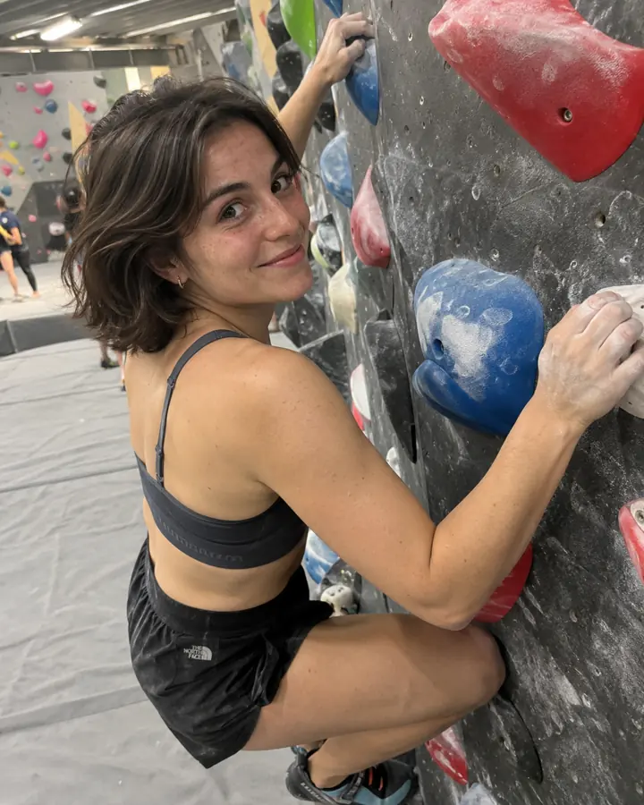
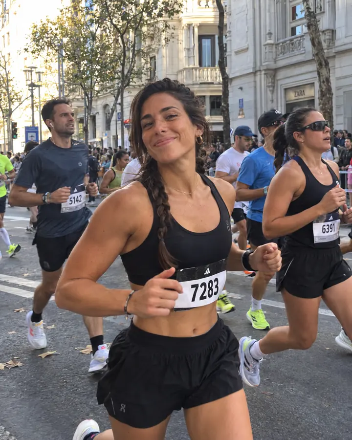
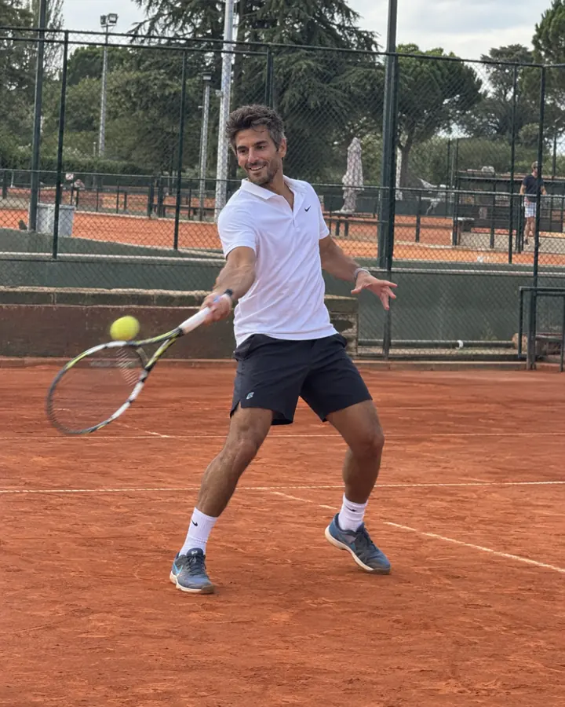
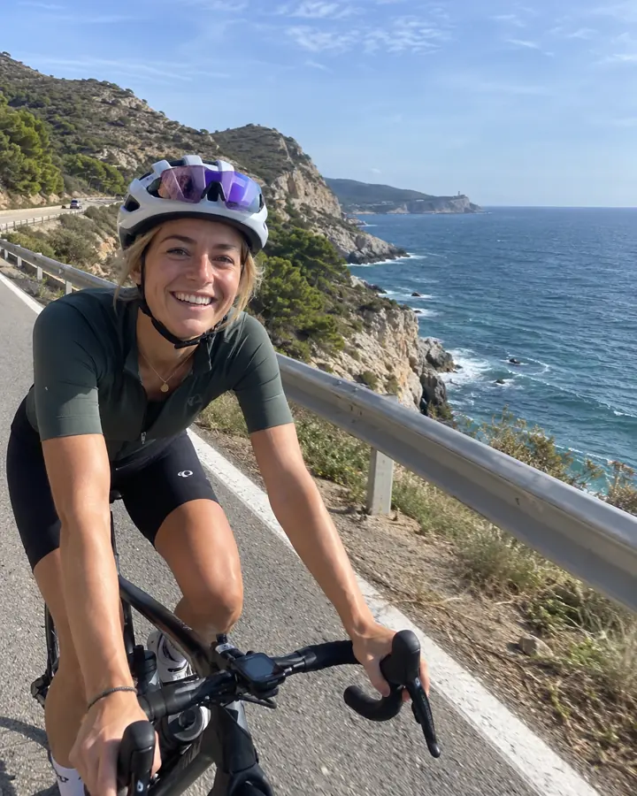
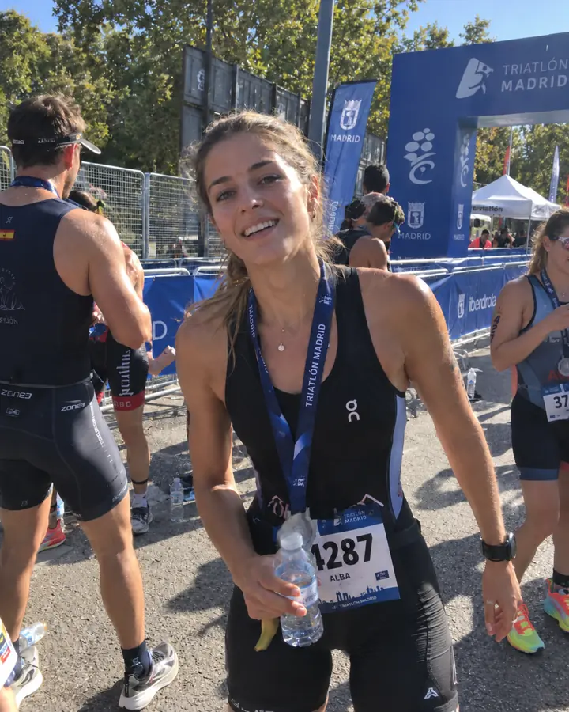

Show what you play, and how.
Up to five sports, each with its level: for fun, regular or all in. Plus when you train, so you cross paths with people on your schedule.
Dating for people who play sport
Pista is the dating app for people who play padel, go running, live at the gym or sign up for Hyrox. It shows you people who train near you, when you do and at your level.
Why Pista
Nobody here thinks it's odd that you leave early on a Saturday night. You hear from people who train when you do, play at your level and would rather have a game than another dinner.
See you on court.
How it works
Like tennis: fifteen, thirty, forty, game. From a profile to meeting in person without going round in circles.
Up to five sports, each with its level: for fun, regular or all in. Plus when you train, so you cross paths with people on your schedule.
A photo, an answer or that 1:32 half marathon. Add a comment and the conversation starts itself.
Sport, place and time. They accept with one tap and you have a date, with something to do while you get to know each other.
One short for padel? Post an open plan or join a run nearby. You meet playing and like each other afterwards.
Padel, regular
People who run, play, climb or surf, and who'd also like to meet someone.








Plans
The best plans don't fit in a chat. On Pista there are runs with coffee, mixed padel americanos and partner workouts open to anyone in your city. You play, grab a drink and, if someone caught your eye, you like them.
What a week in Madrid looks like
Thu22
8:30 · Puerta de Alcalá · 10 km at chatting pace
Fri23
19:00 · Club de Pádel Chamartín
Sat24
11:00 · Box Lavapiés
Founders
The first 1,000 complete profiles in each city get a founder number. It shows on your profile and stays yours as long as you keep your account. The earlier you join, the lower it is. And if you invite your padel partner, you both get 7 days of Pista+.
0127
Safety
From any profile, chat or plan. If you block someone, you stop seeing each other across the whole app. We review every report within 24 hours.
We store an approximate location and only show other people the distance in kilometres.
Nobody sees your date of birth, only your age. If we find someone underage, we close the account.
Hide your height, your job or your gender, and pause your profile whenever you need a break.
Pista is an iPhone dating app for people who play sport. Every profile shows their sports, level and when they train, and from the chat you can suggest a plan to meet while playing. We're starting in Spain: Madrid, Barcelona and Valencia.
Yes. Without paying you get 12 likes a day and one Ace a week, and chatting and suggesting plans is free. Pista+ adds unlimited likes, seeing everyone who liked you, filters by sport, level and schedule, three Aces and a Boost every week, and undoing the last profile you passed.
Not at all. Some people compete and some go to the gym twice a week when work allows. Set your level honestly and you'll find people at your pace.
Yes. On your profile you choose what you're looking for, and one option is someone to train with. You can change it whenever you like.
In doubles sports like padel, tennis, beach volley or Hyrox Doubles you can say you're looking for a partner. People who are also looking see it, and you show up earlier in their list.
We're starting in Spain, with Madrid, Barcelona and Valencia, and then more cities in Europe. For now it's only on iPhone.
You can add your Strava link to your profile and a button to view it will show up. Pista doesn't read anything from your account: whoever opens it sees what you have public there. We don't sell data or use it for advertising, and the details are in the privacy policy.
In the app, go to Settings, Account, Delete account. If you can't get in, here's how.
We're opening in groups in Madrid, Barcelona and Valencia. Join and we'll tell you when it's your turn.